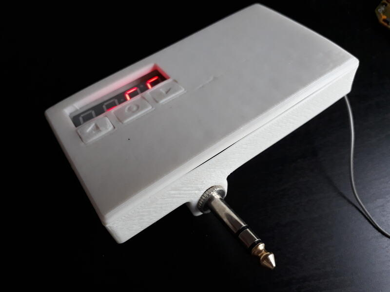
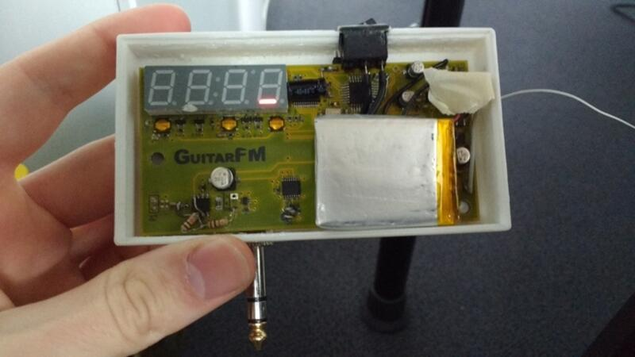
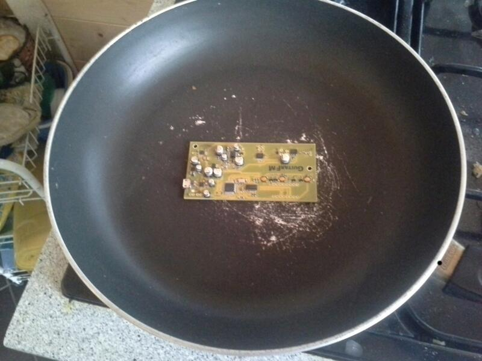

Guitarfm

Summary
An FM transmitter, just like the ones used for hearing your mp3 player’s music on your old car radio, but made for using with an electric guitar.
I made 3 revisions of the design:
- A cobbled-together proof of concept with breakout boards and perfboard, I did not take any pictures sadly
- A first pcb, with a preamp, 7-char LED display, and bypass-able diode distortion, but badly routed and suffers from noise issues
- A second pcb, adding a photoresistor preamp gain control, analog limiter, and lipo charger / psu, that works pretty okay
Rev 3
Components:
- uC: atmega328p
- FM tx: si4713
- Preamp: AD822
- Gain control: LED + LDR + I2C pot (MCP4017)
- Analog limiter circuit
- Display: LED 7-segment x4 + TLC59282 driver
- Control: 3 tactile switches (TL-3315)
Schematic PDF
Kicad project ZIP
BOM
A block diagram:

The PCB was designed and routed in KiCad (git version from 2015), but I had a few issues:
- I forgot to retrigger the zone fills after moving 3 vias, that caused a direct short between the VCC and GND layers
- I accidentally specified the mounting holes as plated in the gerbers and got a nice fat short between the VCC and GND layers, again
- I got the VCC (3.3V) regulator footprint mirrored, so I got to solder the component dead-bug style
- And I ordered the wrong regulator (4.5V instead of 3.3V) on Digikey, and fried 3 of my expensive FM transmitter chips because of that
- I had gotten a fancy PMIC (which turns out wasn’t needed after all) and it wouldn’t power my board no matter what
All avoidable errors, and from now on, I’m putting 0-ohms after all regulators so I can test them before powering the whole board. Also I think KiCad now auto-triggers zone fills before gerber exports.
Fixes:
1. Drilled through the vias and connected the tracks with enamel wire
2. Removed just the plated ring on top and bottom with a cone dremel bit
3. (and 4): I had a 3.3V linear regulator lying around, so a bit of glue and loose wiring made it work
5. After re-reading the datasheet I soldered a 10k resistor, and bridged a pin and the board powered up
Body
I used Solidworks to model the body for the pcb. I printed the body and buttons at my university makerspace on a makerbot printer.
I didn’t have a good kicad-solidworks workflow back then, so in summary, I took the pcb’s dimensions and mouting hole locations with a caliper and modeled only the pcb (no components) in solidworks and modeled the case around it. The case printed right-ish the first time (a bit of warping on the top), it was printed in white PLA.
For the buttons, I did a little adding and subtracting of the case height, tactile switch height and FR4 width and with a little trial and error (and cursing at the printer’s not-so-consistent tolerance) managed to print it right after only 4 times (yay!).
For fitting the 1/4in jack I first soldered the signal wires, then heated up the hole in the PLA (~100°C) and force-screwed it in, warping it a little bit, but now it’s firmly attached.



PCB
The pcb was laid out in an older kicad version, and since the fab house didn’t make me pay for silkscreening the back, I added a nice guitar decal :D
The schematic has older kicad symbols so ther will be import issues with KiCad 5, but nothing too terrible.
I was pleasantly surprised with KiCad v4’s usability/stability improvements, and decided to use KiCad for all future projects (I previously used Eagle, and tried Proteus too).
I really enjoyed using my mouse, a razer Naga 2014, with all the button mapped to actions (e.g. place via, switch layer, start trace, enter, delete, move). I modified a script I found online (don’t remember where), but anyway here it is.

I had a few design & layout mistakes, as explained earlier, in the two pictures below, you can see that I changed the preamp circuit: the op-amp had a too large gain value, so converted it to a two-stage preamp.
I also had problems with the two clamping diodes filtering the signal (I put leds to get a bigger Vf), so had to remove them.
The limiter and distortion circuits seem to work at least, so I have that going for me which is nice.
As the LDR+diode module was not available on Digikey, I forgot to buy it and so I had to set the gain with a resistor in a pinch. and then I forgot about it, so that part of the circuit isn’t tested either.
You can also see the antenna wire sticking out of the case, as I didn’t take the time to put it back nicely in the case each time.


Reflow time !
I ordered a stencil along the PCBs, and applied paste with my uni card. Then, I placed the components one by one with tweezers.
Then, the real fun: I put the board on an old pan, and used my parents’ gas cooktop to reflow the board, adjusting power while checking the temp with a cheap IR gun.

After a few touch-ups with the iron, and fixing the previous design issues, the board powered up !
Code
The whole thing is programmed with Arduino and I’m using Adafruit’s Si4713 library to control the FM TX. I modified the library to enable AGC though.
Using the interface, one can change the frequency, enable/disable diode distortion, adjust input gain, and save the current settings to flash.
Arduino project ZIP and Library folder
The program is a simple polling/refresh loop, I didn’t bother using interrupts or put the uC to sleep.
I did one thing to get better battery life though: After a timeout, there is a “screensaver” function, a simple one-led-at-a-time animation so I don’t drain the battery leaving the display on.
I’ll add a video to this page eventually, when I get my hands on an FM radio.
Previous revisions
The v2 was made in Eagle v6 light and was 100x100mm with a trace antenna.
It had a bit more noise than the v2, a bit due to me putting the PSU right next to the signal trace, I didn’t know any better back then.
I was learning how to solder smd by hand so the joints are a bit ugly, but good enough.
This version used a rotary encoder for the interface
A few pictures:


Project future
I initially wanted to sell these, so a redesign was planned, but let’s be honest, who has an FM radio at home anymore ?
Anyway, if I do revisit this project, I have a few upgrades planned:
- A better input stage
- Integrate an FV1 chip from spinsemi for distortion & reverb
- A battery gauge